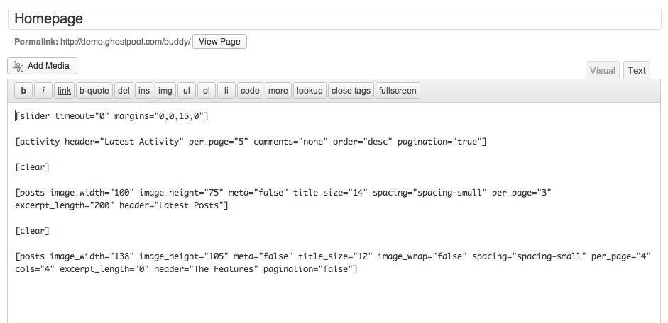
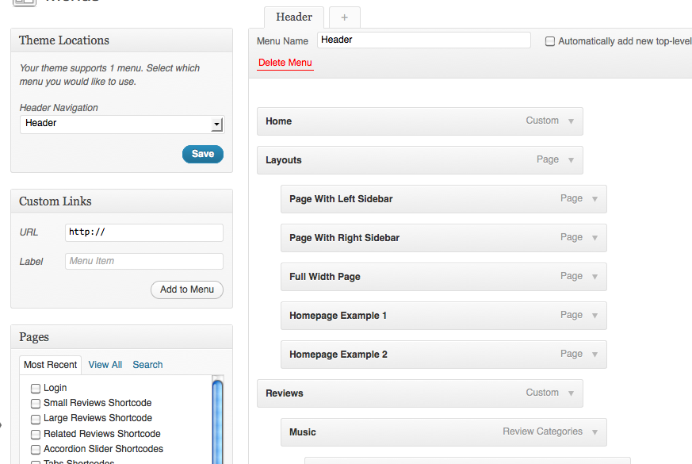
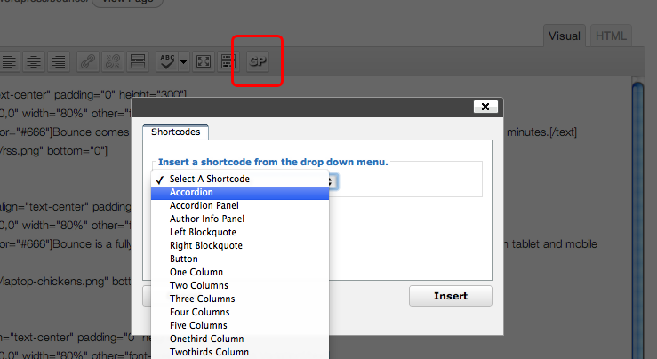

1. Installation
Downloading from ThemeForest
Download the Buddy theme from your ThemeForest downloads page and then unzip the download. Once the download has been unzipped you should see a folder called buddy-theme.
Uploading The Theme
Before uploading the theme make sure you have installed WordPress 3.5 or higher. You can download WordPress for free from WordPress.org. Now you can upload the theme in one of two ways:
1. Upload via WordPress
- From your WordPress dashboard go to Appearance -> Themes.
- On the Themes page click the Install Themes tab.
- Click the Upload link directly below the two tabs which takes you to a page to upload the theme.
- Click the Browse button and locate buddy.zip that is inside your buddy-theme folder. Double click the file to select it and then click the Install Now button.
If you have trouble uploading the theme via WordPress you will need to upload the theme via FTP as explained below.
2. Upload via FTP
- You need to use an FTP client such as FileZilla. To set up your FTP client to connect to your website see: http://codex.wordpress.org/Using_FileZilla
- Upload the buddy folder that is inside your buddy-theme folder to your WordPress themes directory wp-content/themes/.
Activating The Theme
When uploading the theme via WordPress you should be prompted to activate the theme. If uploading the theme via FTP go to Appearance -> Themes and click the Activate link below the Buddy theme.
3. Demo Content
Before importing the demo content make sure you have installed and activated the theme, BuddyPress and bbPress plugin.
A demo file comes with the theme that imports example posts, pages, comments, custom fields, categories, tags, widgets etc. which can help you in learning how the theme works. To add this content follow the steps below:
- Go to Settings -> Media and uncheck the option Organize my uploads into month- and year-based folders (does not apply to WordPress Multi Site installations).
- Go to Tools -> Import and select the WordPress option. If you are prompted to install the WordPress Importer plugin you should do this.
- Click the Browse button and locate the demo.xml file that is inside the buddy-theme/buddy/Help/Demo Content/ folder and double click the file to select it and then click the Upload file and import button.
- A new screen will appear, check the Download and import file attachments option and click Submit.
- To import the demo widgets go to Tools -> Import Widgets, click the Choose file button and locate the widget_data.json file that is inside the buddy-theme/buddy/Help/Demo Content folder and double click the file to select it and then click the Upload file and import button.
4. Setting Up The Theme
Homepage
An example of this page should already have been created for you upon installing the theme. If this page has not been created or you wish to create your own pages please read below.
- Go to Pages -> Add New to create a new page.
- On the right-hand side in the Page Attributes panel select the Homepage page template from the Template drop down menu.
- Give your page a title and in the text editor add the following:
[slider timeout="0" margins="0,0,15,0"]
[activity header="Latest Activity" per_page="5" comments="none" order="desc" pagination="true"]
[clear]
[posts image_width="100" image_height="75" meta="false" title_size="14" spacing="spacing-small" per_page="3" excerpt_length="200" header="Latest Posts"]
[clear]
[posts image_width="138" image_height="105" meta="false" title_size="12" image_wrap="false" spacing="spacing-small" per_page="4" cols="4" excerpt_length="0" header="The Features" pagination="false"]
- To display slides in your slider from specific categories add your category IDs to the
cats="" option (go to Slides -> Slide Categories and get the IDs from the ID column).
- Go to Settings -> Reading, select A static page option and from the Front page drop down menu select the page you just created (leave the Posts page drop down menu empty).
- You can create your own custom homepage layouts by using different shortcodes and changing the shortcode options.
Editing The Homepage
- Once you have created or imported your homepage (see the Homepage section) you can edit the existing shortcodes.
- You can completely customize the homepage by adding/removing/moving different shortcodes. For a list of all the available shortcodes and their options click here.

Navigation
An example navigation should already have been created for you upon installing the theme. If it has not or you wish to create your own navigation please read below.
- Go to Appearance -> Menus to set up your header navigation menu.
- Click the + button and create a menu.
- On the left-hand side from the Theme Locations panel select your menu from the Header Navigation drop down menu.

Background
- Go to Appearance -> Background to add your own background colour or upload your own background image.
- If you only want to add a background colour with no background image you will still need to upload an image to overwrite the existing background image. Upload the transparent image that comes with the theme located at buddy-theme/buddy/lib/images/blank.gif.
Sidebars/Widgets
- Go to Appearance -> Sidebars, click the Add Sidebar link and give your new sidebar a name.
- Now go to any post or page and scroll down to the settings panel and select one of your sidebars from the Sidebar drop down menu.
- Go to Appearance -> Widgets and drag and drop widgets from the Available Widgets panel over to your sidebar widget panels on the right.
- You can also add any of the shortcodes with the theme within a Text widget.
Community Stats
To set up the "Community Stats" widget seen on the live preview, do the following:
- Go to Plugins -> Add News and search for "BuddyPress Community Stats".
- Install the plugin called "BuddyPress Community Stats".
- Go to BuddyPress -> Community Stats and select the stats you want to display (the forums stats do not currently work in this plugin).
- Go to Appearance -> Widgets and drag the Community Stats widget over to the desired sidebar.
Shortcodes
This theme comes with several shortcodes. Shortcodes are pieces of code that can be inserted directly into your posts, pages and widgets to add certain content easily such as videos and dividers.
- Click the Visual tab at the top of the text box on any post or page.
- Click the GP button to open the shortcode window.
- From the shortcode drop down menu select a shortcode, which will automatically be inserted into the text box.
- You can view the full range of options for all the shortcodes from the following page.

Sliders
Creating Slides
- Go to Slides -> Add New to create a slide.
- On the right-hand side you will see a Featured Image panel, click the Set featured image link to set an image for this slide.
- After uploading or selecting your featured image click the Use as featured image link in the image upload window.
- Enter your page, image or video URL that you want the slide to link to in the Slide URL text field.
- On the right-hand side you can add your slide to a category from the Slider Categories panel.
Inserting Slider Shortcode
- To insert a slider into your page add the following code to the text box on any post or page:
[slider name="slider" width="900" height="400" cats="" slides="-1" timeout="6" orderby="menu_order" order="asc" arrows="true" buttons="true" shadow="true" margins="" align="alignnone" preload="false"]
- To add slides from a specific category add the slider category IDs to the
cats="" option (go to Slides -> Slide Categories and get the IDs from the ID column).
- You can also change a variety of other slider options by adjusting the shortcode, for a full list of slider options see this page.
Blog Pages
An example of this page should already have been created for you upon installing the theme. If it has not or you wish to create your own pages please read below.
This theme comes with a [posts] shortcode that can be used to display posts in a blog or gallery/portfolio format.
Creating Posts
- Go to Posts -> Add New to create a new post.
- Give your post a title and content in the text editor.
- Scroll down to the Post Settings panel where you can control the way the post looks.
- On the right-hand side you will see a Featured Image panel, click the Set featured image link to set an image for this post.
- After uploading or selecting your featured image click the Use as featured image link in the image upload window.
- On the right-hand you can assign your post to categories from the Categories panel.
Inserting Posts Shortcode
- Go to Pages -> Add New and insert the following post shortcode into the text editor:
[posts]
- To add posts from a specific category to a post shortcode add the post category IDs to the
cats="" option (go to Post -> Categories and get the IDs from the ID column).
- You can also change a variety of other blog options by adjusting the shortcode, for a full list of blog options see this page.
Gallery/Portfolio Pages
This theme comes with a [posts] shortcode that can be used to display posts in a blog or gallery/portfolio format.
Creating Posts
- Go to Posts -> Add New to create a new post.
- Give your post a title and content in the text editor.
- Scroll down to the Post Settings panel where you can control the way the post looks.
- On the right-hand side you will see a Featured Image panel, click the Set featured image link to set an image for this post.
- After uploading or selecting your featured image click the Use as featured image link in the image upload window.
- To add additional images/audio/images in a lightbox click the the Add Media button and upload your files.
- On the right-hand you can assign your post to categories from the Categories panel.
Inserting Posts Shortcode
- Go to Pages -> Add New and insert the following post shortcode into the text editor:
[posts image_width="250" image_height="150" cols="3" per_page="3" excerpt_length="10" pagination="false" meta_author="false" meta_date="false" meta_cats="false" link="image" title_size="18"]
- To add posts from a specific category to a post shortcode add the category IDs to the
cats="" option (go to Posts -> Categories and get the IDs from the ID column).
- You can also change a variety of other post options by adjusting the shortcode, for a full list of portfolio options see this page.
Contact Page
An example of this page should already have been created for you upon installing the theme. If it has not or you wish to create your own pages please read below.
- Go to Pages -> Add New to create a new page.
- Insert the contact form shortcode into the text editor e.g.
[contact email="youremail@address.com"].
- Replace
youremail@address.com with your own email address.
- If your contact form is not working click here.
Login Page
An example of this page should already have been created for you upon installing the theme. If it has not or you wish to create your own pages please read below.
- Go to Pages -> Add New to create a new page.
- On the right-hand side in the Page Attributes panel select the Login page template from the Template drop down menu.
- Now go to Appearance -> Theme Options -> Buddypress Settings and add the login page URL in the Login URL text field.
Customizing Theme Design
You will probably want to customize the design of the theme. This may involve editing the HTML in the php files (theme structure) and the CSS in the style sheets (theme design). If you are not familiar with HTML and/or CSS you will want to hire a developer to modify the theme for you. You can contact one of these developers from here. If they are unavailable you will have to look elsewhere such as FreelanceSwitch.
Developer Tools
An excellent way of styling your theme is to use the developer tools that come with most modern browsers. The developers tools allow you to see what HTML elements need to be styled and allows you to edit the styling of the theme within the browser window. These changes are not permanent and nobody else sees them, it's just a great way of adjusting the look of your site quickly. Here are some links to the developer tools for each of the major browsers:
Editing the Style
Once you know what HTML elements you need to style and how, you can either edit the stylesheets directly (style.css etc.) or override the default styling by adding your CSS code to the Custom CSS box as explained below:
- Go to Appearance -> Theme Options -> CSS Settings and in the Custom CSS text box.
- The CSS code you add to this text box will overwrite the default styling of the theme.
- The benefit of adding your CSS code to the Custom CSS text box rather than editing the stylesheets is that when theme updates are released your style modifications will not be overwritten.
- For example, to edit the link and link hover colours you would add the following to the Custom CSS text box:
a {
color: #ff0000;
}
a:hover: {
color: #000000;
}
- To change the colour of the post meta text you would add:
.post-meta {
color: #ff0000;
}
Translation
Translating The Theme
- Install the translation program Poedit.
- Open the buddy-theme/buddy/languages/en_EN.po file with Poedit.
- Translate the file with Poedit, click here for more information.
- Locate wp-config.php, which is in the root directory of your WordPress installation and change the language, click here for more information.
- If you want your website to support multiple language you can use the qTranslate plugin.
Updating Your Translation Files
- If you have updated the theme and the changelog says the translation files have been updated, if you have modified the translation files or created new ones you will want to update them rather than using the new ones.
- To do this insert your modified translation file (e.g. en_EN.po) into the buddy-theme/buddy/languages/ folder overwriting the new file.
- Now open this file in PoEdit and click Update and it will display the text changes since the latest theme update.
Using The Lightbox
Gallery Shortcode
- To enable the lightbox on the
[gallery] shortcode add itemtag="div" link="file" to the shortcode, like so:
[gallery itemtag="div" link="file" columns="3"]
Manual Use
- To use the image or video pop up effect on any content add
rel="prettyPhoto" to your links as follows:
<a href="http://example.com/imagename.jpg" rel="prettyPhoto"><img src="http://example.com/imagename.jpg" alt="" /></a>
<a href="file=http://www.example.com/video.flv&image=http://www.example.com/image.jpg" rel="prettyPhoto[pp_gal]">Text Link</a>
- If you want to group items in the lightbox add
[pp_gal] to the link e.g. rel="prettyPhoto[pp_gal]".
- You can add the following files to the lightbox, using the following formats:
- YouTube: http://youtu.be/Sw-H3FoV2lc&image=http://www.example.com/image.jpg
- Vimeo: http://vimeo.com/8245346
- QuickTime: http://www.example.com/video.mov?width=780&height=418
- FLV/MP4/M4V/MP3: file=http://www.example.com/video.flv&image=http://www.example.com/image.jpg
- OGV/OGG/WEBM: http://www.example.com/video.ogv
- External Site: http://www.twitter.com?iframe=true&width=400&height=200
Disabling The Lightbox Script
- To disable the lightbox script that comes with this theme open buddy-theme/buddy/lib/scripts/custom.js and find and remove:
jQuery("a[rel^='prettyPhoto']").prettyPhoto({
theme: 'pp_default',
deeplinking: false,
social_tools: ''
});